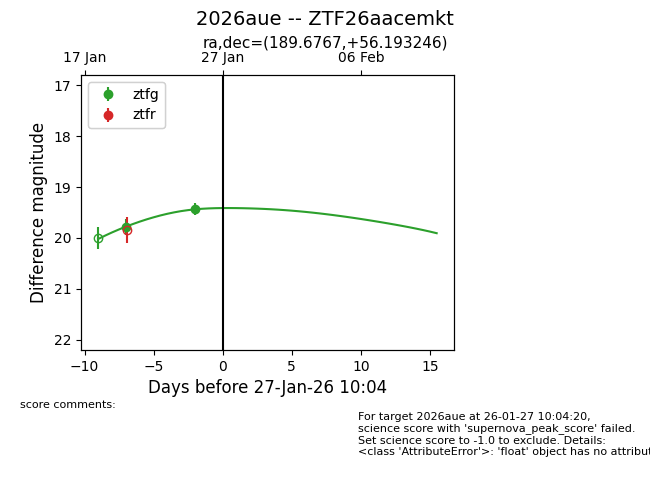
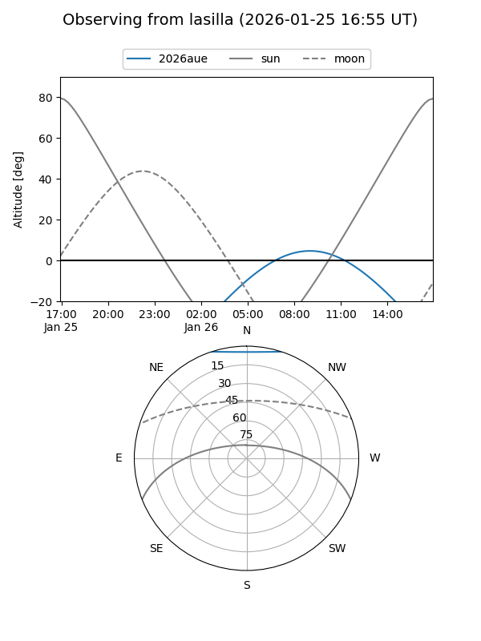
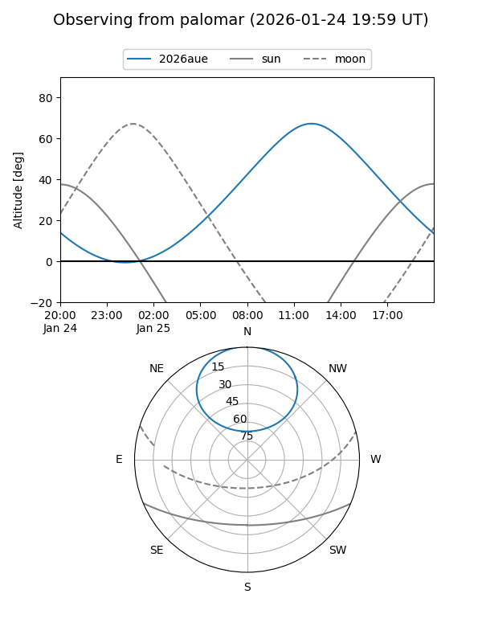

2026aue
Target 2026aue at 2026-01-27 10:06
Aliases and brokers:
FINK: link
Lasair: link
ALeRCE: link
TNS: link
YSE: link
alt names
ZTF26aacemkt (ztf,fink_ztf)
2026aue (tns,yse)
Coordinates:
equatorial (ra, dec) = 189.6767,+56.19325
equatorial (HMS+DMS) = 12:38:42.42,+56:11:35.69
galactic (l, b) = (126.5674,+60.84505)
Flags:
Photometry:
last ztfg=19.44
2 ztfg detections
Lightcurve

Visibility


Additional plots